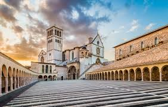

Town in Italy

Assisi is a town and comune of Italy in the Province of Perugia in the Umbria region, on the western flank of Monte Subasio.
It is generally regarded as the birthplace of the Latin poet Propertius, born around 50–45 BC. It is the birthplace of St. Francis, who founded the Franciscan religious order in the town in 1208, and St. Clare (Chiara d'Offreducci), the founder of the Poor Sisters, which later became the Order of Poor Clares after her death. The 19th-century Saint Gabriel of Our Lady of Sorrows was also born in Assisi.